Префектура Акита · Юдзава · мисо и соевый соус
YAMAMO в Юдзаве: 150 лет мисо и соевого соуса и новые дрожжи
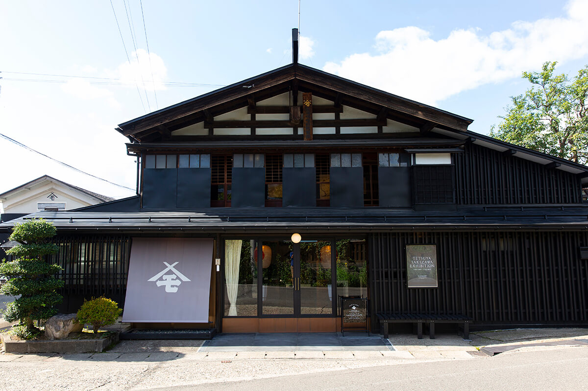
Мисо и соевый соус обычно ценят за то, что их вкус не меняется десятилетиями. Мисоварня YAMAMO в городе Юдзава хранит рецепты полуторавековой давности и при этом ищет новые дрожжи, придумывает упаковку для экспорта и зовёт гостей на экскурсию по заводу.
История
Полтора века в Ивасаки
Ивасаки, район города Юдзава на юге префектуры Акита, когда-то был замковым городком и почтовой станцией на большой дороге. Природа здесь щедрая, и в этих краях давно выращивают рис, варят сакэ и делают мисо. В конце эпохи Эдо (1603–1868) основатель семьи Такахаси открыл здесь мисоварню YAMAMO. С тех пор больше 150 лет в Ивасаки делают мисо и соевый соус, а о самой мисоварне говорят как о новаторе в своём деле.
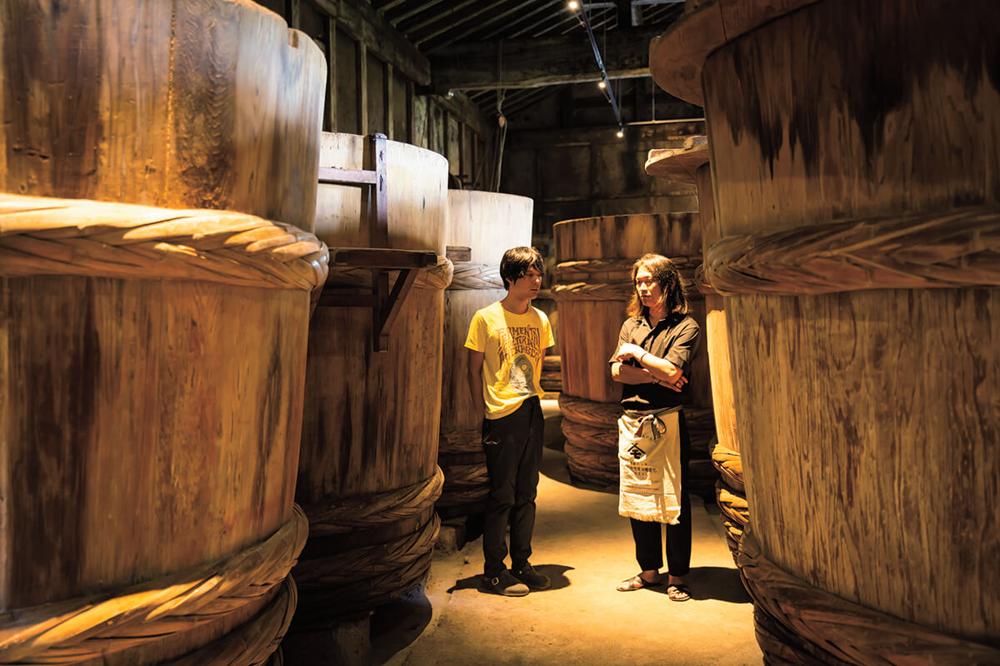
Мороми называют смесь сои, рисового кодзи и соли, которую закладывают в чаны бродить и зреть. В старом кура это делают так же, как делали предки: огромные деревянные чаны хранят опыт многих поколений мастеров.
В 2019 году мисоварней руководил глава седьмого поколения семьи. Он принял дело в 2006 году и с тех пор сочетает эксперименты с наследством предков.
«От приправ всегда ждали неизменного вкуса. Но если где-то не рождается новое, нового богатства не накопить. С тех пор как я принял семейное дело, я смешиваю эксперименты с культурой и продолжаю искать новое в брожении»
глава седьмого поколения YAMAMO
Лаборатория
Дрожжи, которых раньше не знали
Вскоре после того как дело перешло к нему, глава мисоварни начал пробовать разные пропорции сырья, сроки брожения и выдержки, менять сам порядок работы. Чтобы дать дрожжам и молочнокислым бактериям работать в полную силу, в части продуктов он снизил соль с обычных для мисо 13% до 7%.
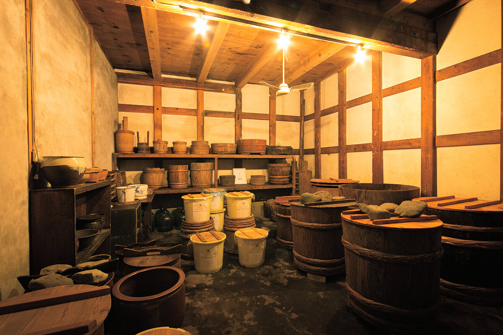
Больше всего его интересуют дрожжи. Меняя условия и проверяя результат, в 2016 году он нашёл новый вид дрожжей. Под них подобрали и выдержку: мисо зреет в эмалированных баках, где проще создать нужную среду. Так брожение настраивают на заранее задуманный вкус и аромат, и сам глава мисоварни говорит, что «проектирует брожение».
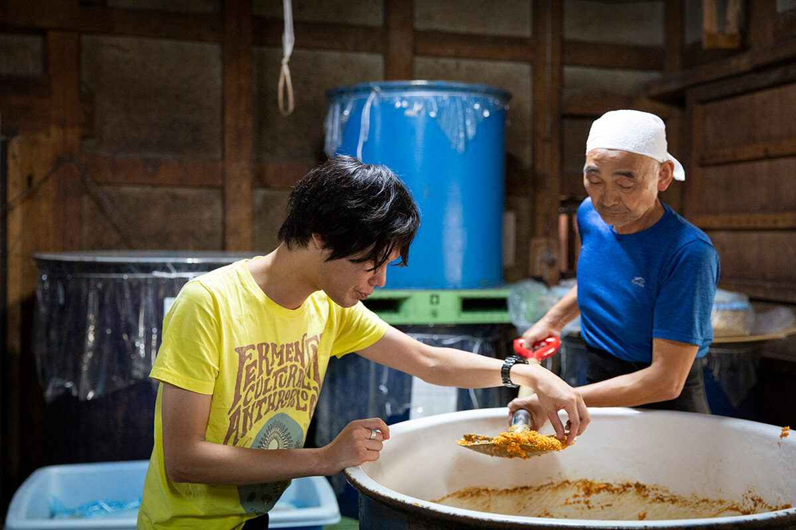
Новые дрожжи дают яркий аромат и к тому же размягчают мясо и рыбу. Для дрожжей из мисо редкость, что они работают даже без соли, и поэтому на мисоварне думают о новых продуктах, от готовых продуктов до алкогольных напитков.
«В дрожжах большой потенциал. Ставишь цель и проверяешь, что получится»
глава седьмого поколения YAMAMO
Дизайнер ферментации, побывавший на мисоварне в 2019 году, объясняет это так: у дрожжей каждой местности свой характер, и разумно строить на нём мисо. По его словам, в мисо YAMAMO чувствуется замысел.
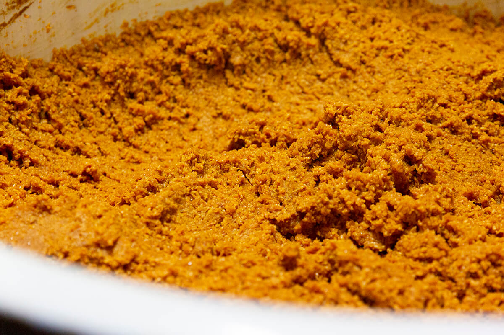
Экскурсия
Кура внутри кура
YAMAMO удивляет не только тем, как здесь делают мисо. Чтобы передать дальше историю семьи и культуру Ивасаки, в 2017 году здесь начали водить экскурсии по заводу. Гости проходят по кура, где делают мисо и соевый соус, а потом попадают в японский сад, устроенный по мотивам местной легенды о боге-драконе, которую рассказывают в Ивасаки с эпохи Муромати (XIV–XVI века), в художественную галерею и в кафе. В 2026 году экскурсию бронируют заранее на сайте мисоварни.
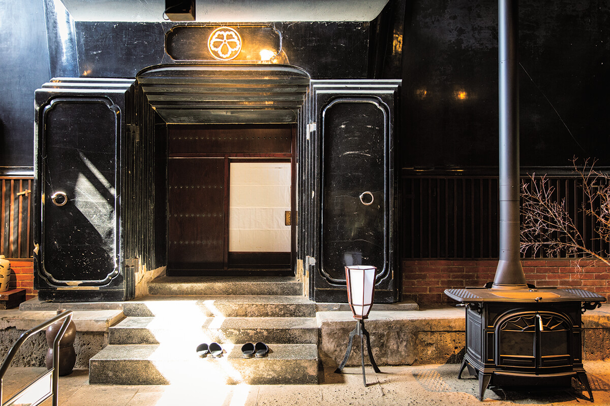
Начинается экскурсия у входа в кура, где раньше жила семья. Здесь одно здание стоит внутри другого. Так строили в краях с глубоким снегом: мастерская и жильё были под одной крышей, чтобы удобнее было сбрасывать снег.
«Важно рассказывать историю, которую мы унаследовали. Пока мы живём, мы что-то теряем и что-то создаём, это цикл. Предки оставляли после себя памятные камни и делали многое для города. Я тоже хочу заново открывать старое и создавать из него новое, и один из способов это искусство»
глава седьмого поколения YAMAMO
Галерея и кафе
Искусство в мисоварне
Часть кура переделали под галерею и кафе. Галерея в мисоварне поначалу удивляет, но у неё ясная цель: искусство привлекает творческих людей из Японии и из-за рубежа, они рассказывают о месте по-своему, и это помогает всему району.
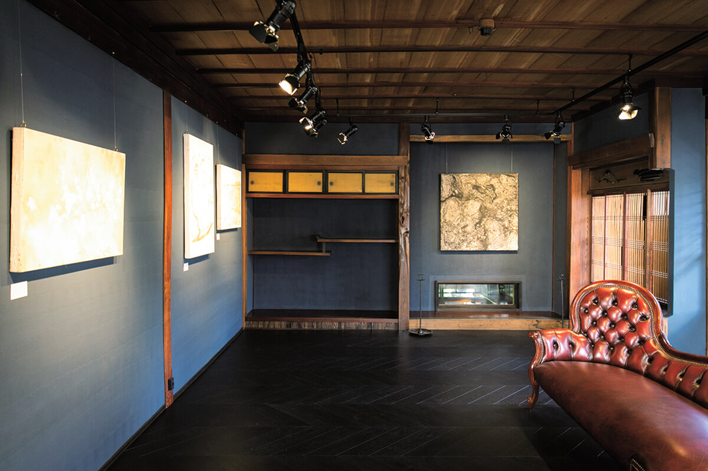
Кафе YAMAMO GARDEN CAFE на первом этаже открыто для всех, и местных, и туристов: это место, где встречаются разные культуры. В меню блюда с мисо и соевым соусом YAMAMO, а для гостей из-за рубежа, которым японские приправы ещё непривычны, есть кофе и алкоголь.
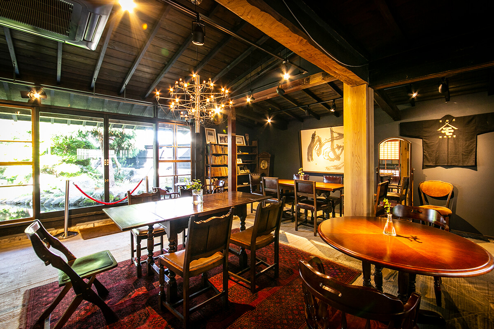
Блюда здесь придумывают так, чтобы традиционный вкус было легко понять и иностранцу.
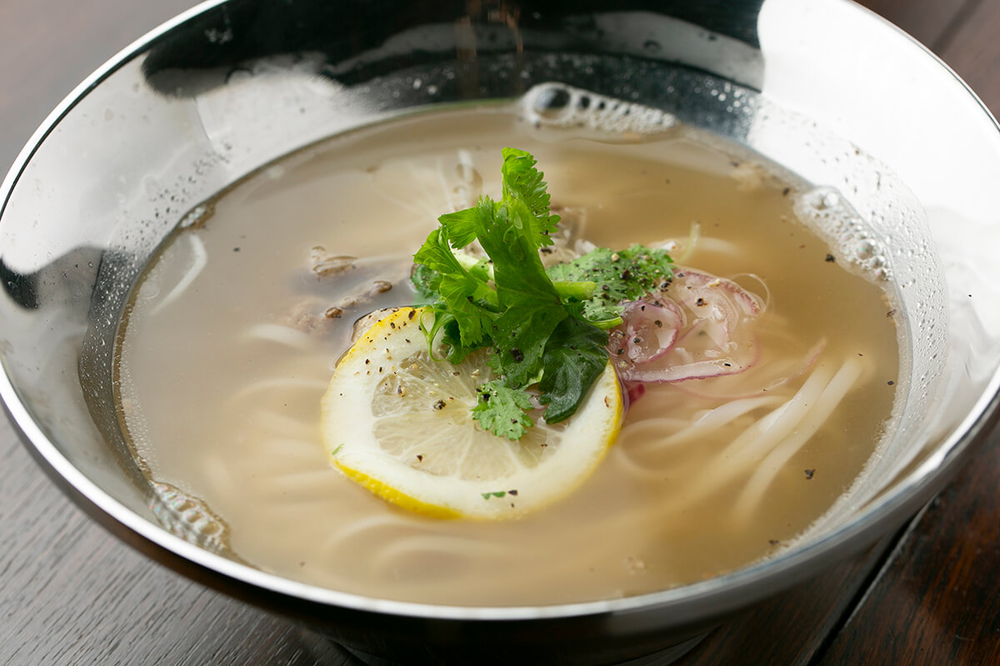
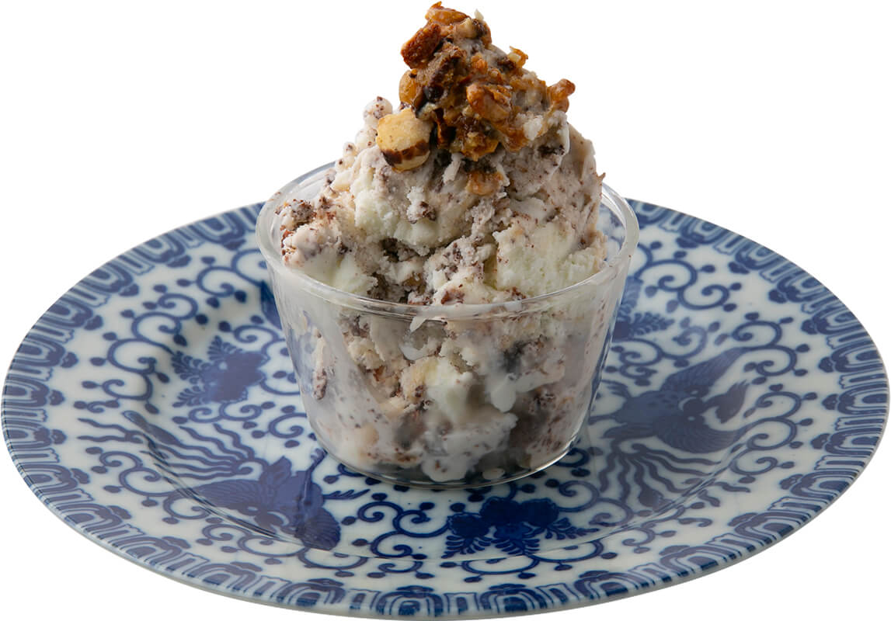
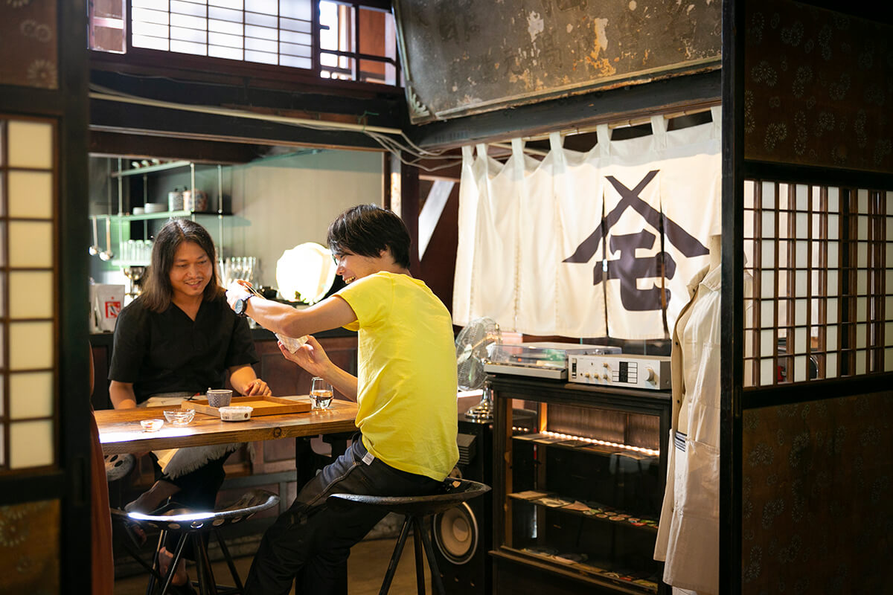
Магазин
Мисо в новой упаковке
Продукты YAMAMO продают и за рубежом. Когда начался экспорт, глава мисоварни сам придумал для них новый стильный дизайн. Упаковка при этом практичная: мисо кладут в ёмкости, которые держат температуру и плотно закрываются, чтобы вкус пережил долгую дорогу.
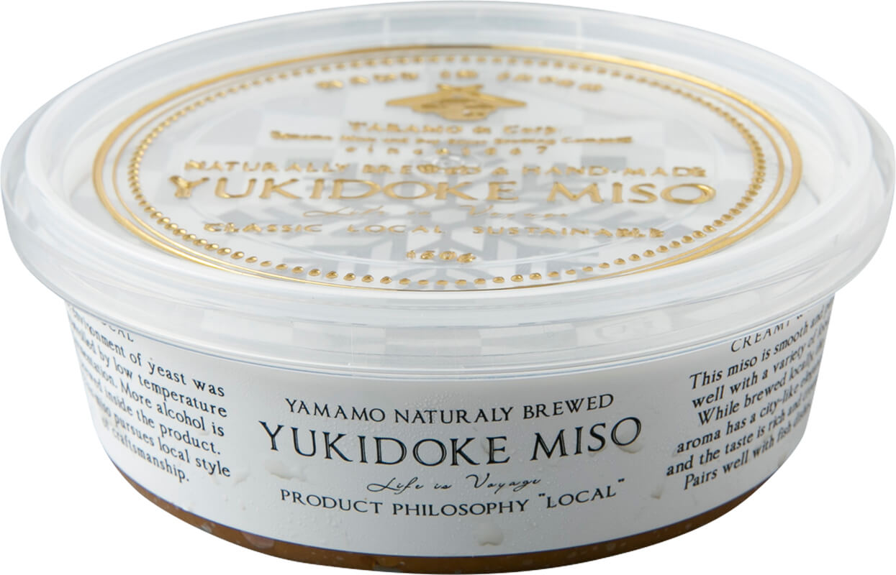
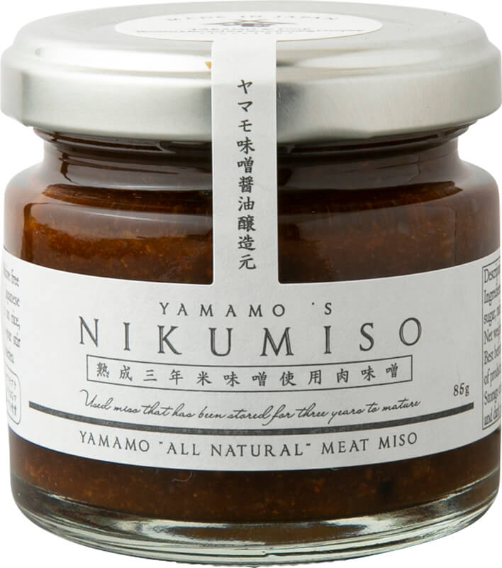
Мисо в пакетах нарочно кладут в непрозрачную упаковку. Японские приправы обычно продают так, чтобы было видно содержимое, но у зарубежных продуктов это не принято. Расчёт оправдался: мисо YAMAMO продают даже в магазинах одежды, и о нём заговорили люди далеко от пищевой отрасли.
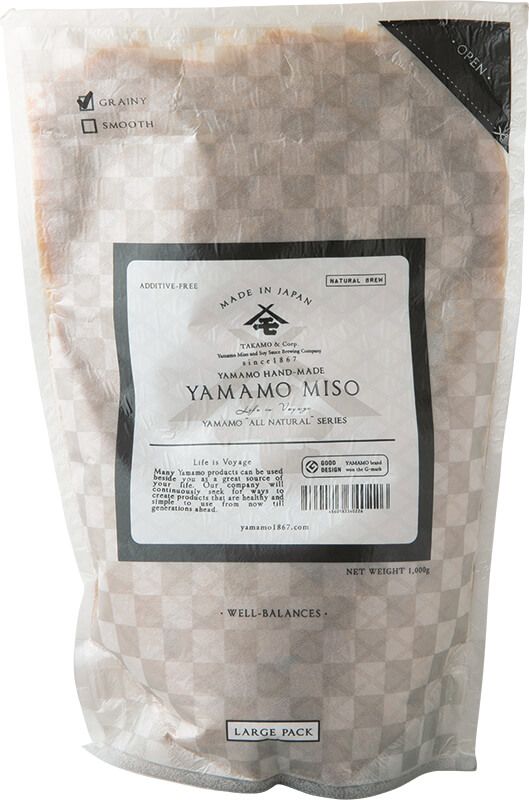
Соевый соус это второй главный продукт YAMAMO. Его делают на подземной воде горного массива Курикома и солят на 25% меньше обычного, чтобы сохранить вкус сырья. Линейка широкая, от сладкого соуса до соуса для маринования.
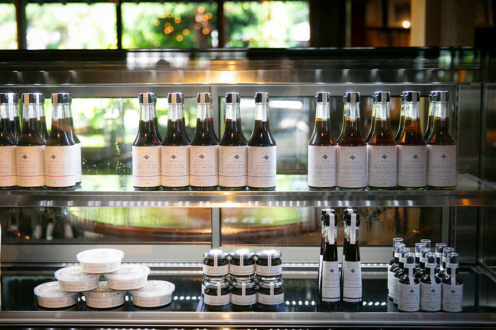
YAMAMO
- Адрес
- префектура Акита, Юдзава, Ивасаки, 124
- Телефон
- +81 183-73-2902
- Часы работы
- 9:00–18:00, кафе 10:00–16:30 (последний заказ)
- Выходные
- нерегулярно
- Сайт
- yamamo1867.com
Фото: Ямато Нонака.